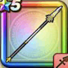

メタスラのやり
攻略班 6.0点 / ムーンサルトけものづき一閃突きまわしげり超さみだれ突き※錬成で強化可能
くわしい特徴
【レベル別習得スキル】 Lv1メタル系+1ダメージ Lv1ムーンサルト（消費MP：3）飛行系に威力250%それ以外の系統には130%の体技ダメージを与える Lv10けものづき（消費MP：3）けもの系に威力180%それ以外の系統には120%の斬撃ダメージを与える Lv15一閃突き（消費MP：18）敵1体に30%の確率で斬撃ダメージの会心の一撃を与える。こころや心珠で会心率を上げても影響を受けない。 Lv20まわしげり（消費MP：8）足で周囲をなぎはらい敵全体に威力110%の体技ダメージを与える Lv30超さみだれ突き（消費MP：18）ランダムな敵に威力80%の斬撃攻撃を4回する Lv35スライム系へのダメージ+10% Lv45守備力+12 Lv50攻撃力+12錬成スキル改1スライム系へのダメージ+20%改2超メタルさみだれ突き（消費MP：23）ランダムな敵にメタル系なら+2ダメージを与え、それ以外には威力100%の斬撃攻撃を4回する改3メタルまわしげり（消費MP：26）敵全体にメタル系なら+6ダメージを与え、それ以外には威力220％の体技ダメージを与える改4錬成ぶき特別演出解放・メガモン討伐結果発表時に特別演出が追加・武器の見た目に特別なエフェクトが追加 【限界突破スキル】 1凸スキルの斬撃・体技ダメージ+5% 2凸スキルの斬撃・体技ダメージ+5% 3凸スキルの斬撃・体技ダメージ+5% 4凸スキルの斬撃・体技ダメージ+5%